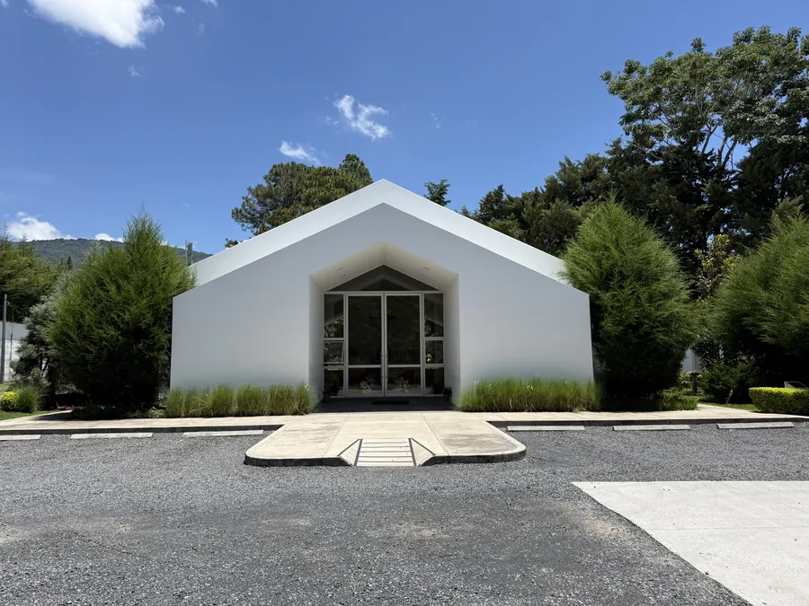
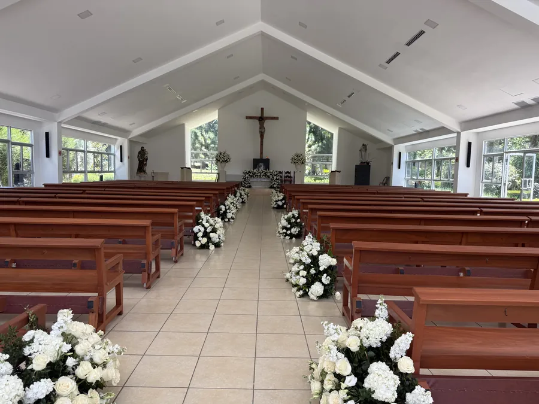
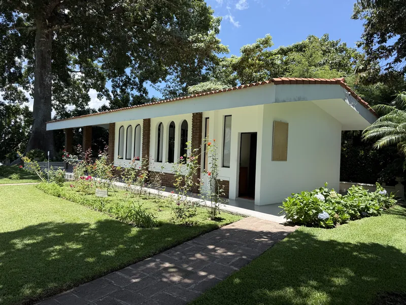
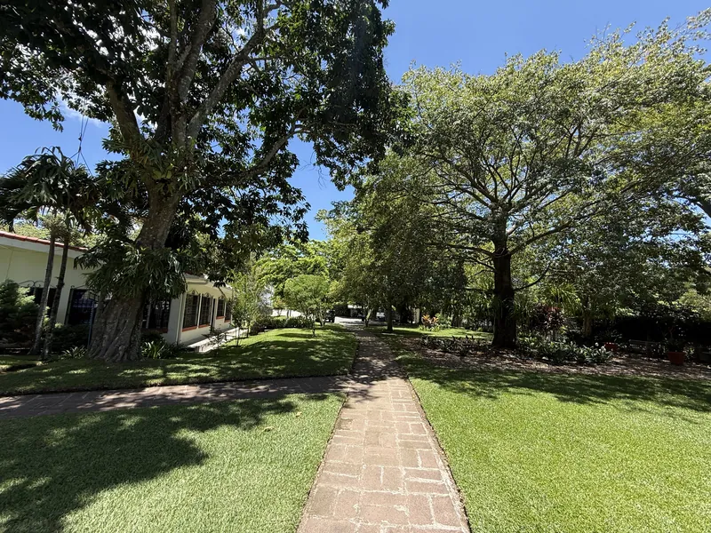
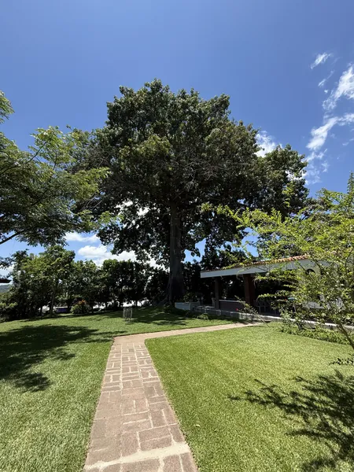
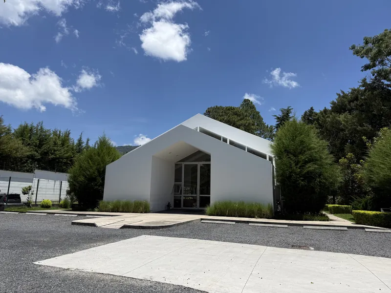
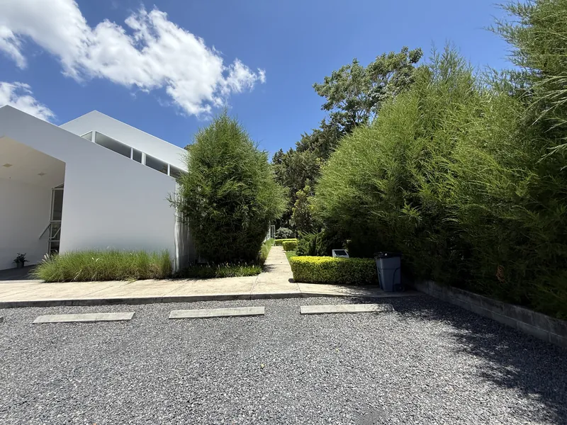
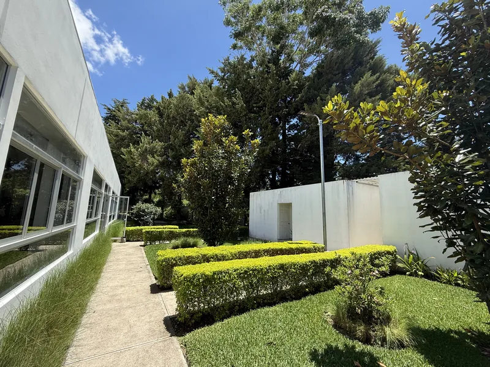
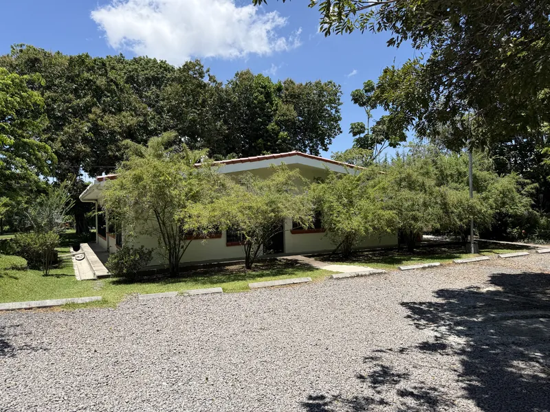
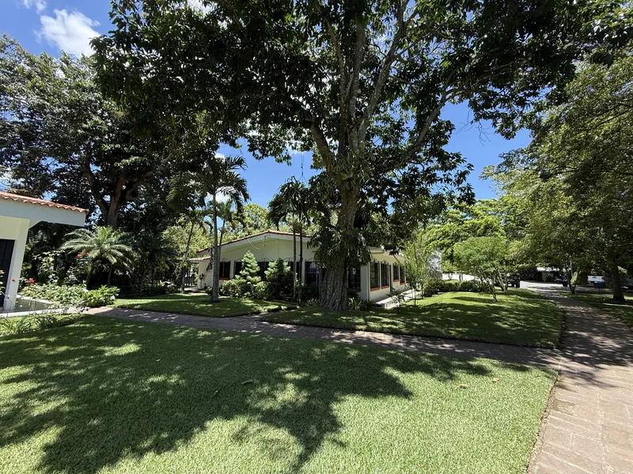

Holy Mass
- Monday to Saturday6:00 a.m.Chapel
- Monday to Saturday12:00 noonChapel
- Sunday6:30 a.m.Chapel
- Sunday11:30 a.m.Main church
A Marian sanctuary and a land of mercy. A Catholic parish set among gardens, where we pray, celebrate the sacraments and meet as a community, at kilometer 12.5 of the road to El Boquerón.

Monday to Saturday, Mass is at 6:00 a.m. and 12:00 noon in the chapel. On Sundays, at 6:30 a.m. in the chapel and 11:30 a.m. in the main church. All Masses are in Spanish.
Come early. During Holy Week and feast days the times may change.
Office WhatsApp: +503 6028-1718 (messages only).
The parish has two places to celebrate. The main church holds about 300 people; the chapel, more intimate, about 50. Both sit among gardens and large old trees.

A new church, white and full of light, with large windows onto the garden. Sunday Mass at 11:30 a.m. and the larger celebrations take place here.

A simple chapel with arched windows and roses at the door, ideal for daily prayer and for small family celebrations.






The parish celebrates weddings, baptisms and first communions. Message us on WhatsApp to ask about available dates and requirements.
Celebrate in the chapel or in the main church. The marriage file is opened one and a half months before the wedding.
See requirements, offerings and rulesWe walk with families who want to baptize their children. Ask the office about requirements, preparation talks and available dates.
Ask for informationPreparation and celebration of first communion. The office will tell you when catechesis starts and which documents you need.
Ask for informationThe church and the chapel are sacred places. Please read the rules for using the church and chapel before your celebration.

Onuva is the name of the Catholic community that brings this place to life, also known as the Fraternity of the Mother of God. It was born in Spain, in La Puebla del Río (Seville), with a Marian spirituality and a concrete commitment: to serve the poorest and those who have no one.
In Santa Tecla, the parish is dedicated to Our Lady of Graces, the Virgin holding the Child Jesus who appears in our logo. Here we pray, celebrate and walk alongside the families of the area.
“A Marian sanctuary and a land of mercy.”
Patronal feast. Every year we honor Our Lady of Graces with Mass, the rosary and special days with the communities of the parish and its school.
We are at kilometer 12.5 of the road to El Boquerón, in Santa Tecla, La Libertad. There is parking on site.
On Sundays there is Mass at 6:30 a.m. in the chapel and at 11:30 a.m. in the main church. Monday to Saturday, Mass is at 6:00 a.m. and 12:00 noon in the chapel. Masses are in Spanish.
Confession is on Thursdays from 4:00 p.m.
Monday to Friday from 8:00 a.m. to 12:30 p.m. and from 1:30 p.m. to 4:00 p.m. Saturday from 8:00 a.m. to 12:00 noon.
In the chapel the offering is $200, with no deposit. In the main church the offering is $350, plus a $100 deposit that holds your date and is returned if the rules are respected. Air conditioning is optional and only available in the main church, for an extra $100 offering. The offering for the wedding rehearsal is $25. See all requirements.
The marriage file is opened one and a half months before the wedding, not days or weeks before. An appointment is only booked when all documents are complete.
No. The parish offers the church and chapel as a service for the religious ceremony only. The reception takes place somewhere else.
At kilometer 12.5 of the road to El Boquerón (Carretera al Boquerón), Santa Tecla, La Libertad, El Salvador. There is parking on site.
By WhatsApp at +503 6028-1718, messages only. You can also visit the parish office during office hours.
Message us on WhatsApp and the parish office will reply during office hours.